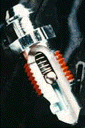

|
Speed Bleeders |
|
Speed
Bleeders come highly recommended by racers. As shown in the animation, there is a spring-loaded
ball check valve which allows one to crack open the bleeder and just pump
the pedal. The check valve prevents air from being sucked back in on
the upstroke. They are only $7 each. After hearing numerous
reports of people stripping the threads due to overtightening, I opted for
the stainless version, which is still only $15 each. I also
recommend ordering the Speed Bleeder catch bag ($6). The correct
part number (front and rear) is SB3824.
Now, having said that, they did not work right on my truck (work fine on my motorcycle). If they are loose enough to allow fluid to pass, air would leak in by the threads. I am currently using an el cheapo--but damn effective--one-man bleeder: a length of silicone aquarium airline submerged into a partially filled brake fluid container. Works like a charm. |